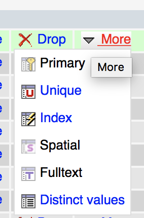
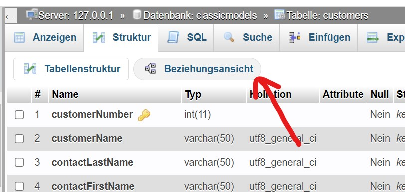
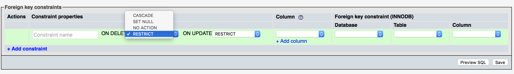

< Index
Hausaufgaben
Hint: https://www.php-einfach.de/mysql-tutorial/mysql-fremdschluessel/
Recherchiere die Antworten zu den Fragen in den drei Themenfeldern:
1. Indizes in MySQL-Tabellen
- Was passiert in der Datenbank, wenn du einen Index auf einer Spalte anlegst?
- ->Sobald ein Key vorhanden ist
- Muss man in MySQL zwingend Indizes anlegen?
- Was ist der Vorteil beim Einsatz von Indizes?
- Welche Optionen gibt es für Indizes in MySQL und was bedeuten diese?

2. Foreign Keys in phpMyAdmin anlegen
- Wie kann man in phpMyAdmin Fremdschlüssel anlegen? Erstelle einen Screenshot, der aufzeigt, wie du zur "Beziehungsansicht" oder "Beziehungsübersicht" oder "relation view" gelangst! Leider ist das in jeder Version von phpMyAdmin anders ...
Datenbank im Menu anwählen (classicmodels) > Tabelle im Menu anwählen (customers) > "Struktur" anklicken > Beziehungsansicht wählen:

- Was passiert, wenn du in phpMyAdmin das Feld für den "Constraint-Name" leer lässt?
Das Feld für den Constraint-Name können wir leer lassen, phpMyAdmin wählt selbst einen passenden Namen.
- Im "relation view" findest du die beiden Dropdowns "ON DELETE ("beim Löschvorang")" und "ON UPDATE ("beim Verändern")". Was bedeuten die Optionen, die Sie dort vorfinden:
Angenommen der User wird aus einer Users-Tabelle gelöscht mit Fremdbezug auf Beiträge...
- RESTRICT = Bei RESTRICT wird das Löschen des Nutzers verhindert sofern dieser noch Beiträge hat (default).
- CASCADE = Bei CASCADE werden alle Beiträge des Nutzers gelöscht. (Versehentlich würde das heissen = Chaos)
- SET NULL = Bei SET NULL wird die userid für alle Beiträge des Nutzers auf Null gesetzt.
- NO ACTION = NO ACTION verhält sich identisch zu RESTRICT. NO ACTION kommt aus dem SQL-Standard, wird aber von MySQL identisch zu RESTRICT behandelt.
- Was kann es für unliebsame Konsequenzen haben, wenn du dir nicht bewusst bist, was diese Optionen genau bedeuten?
Was passieren kann, sieht man oben. Versehentlich gelöschte Daten durch Unwissen wiederherzustellen ist brutal mühsam!
- In welcher (früher sehr verbreiteten) Speicherengine von MySQL kann man keine Fremdschlüssel anlegen?
Die Speicherengine ist das interne Format, indem MySQL die Daten auf der Festplatte abspeichert. Früher wurde zumeist MyISAM genutzt, seit MySQL 5.5.5 ist allerdings InnoDB die Standard-Speicherengine von MySQL.

3. MariaDB
- Recherchiere kurz die Geschichte der Entstehung des Projekts "MariaDB!"
MariaDB ist der Open-Source, Hostpoint setzt auch auf die Dienste von MariaDB
- Was sind die drei wichtigsten Unterschiede zwischen MariaDB und MySQL?
https://kinsta.com/de/blog/mariadb-versus-mysql/
- Warum wissen viele Webentwickler gar nicht, was MariaDB ist?